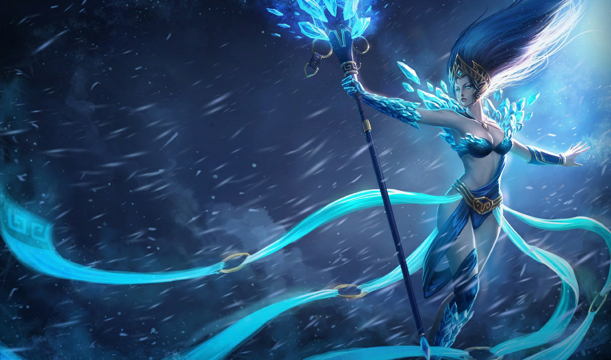
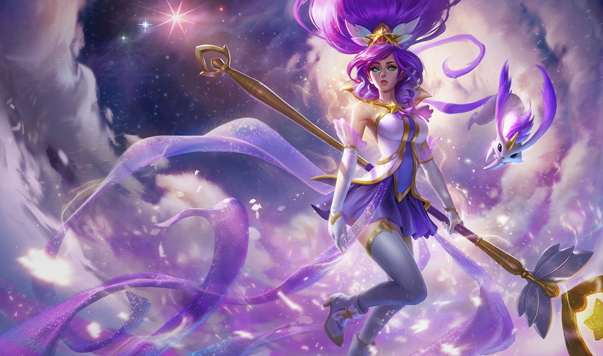
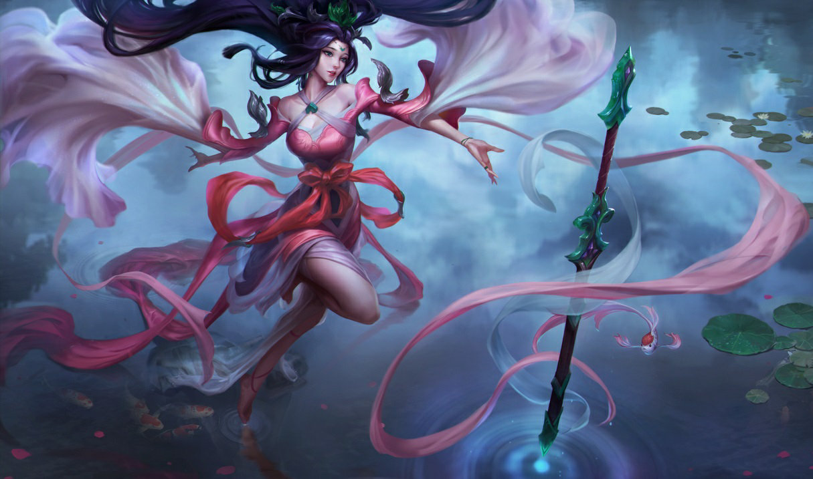
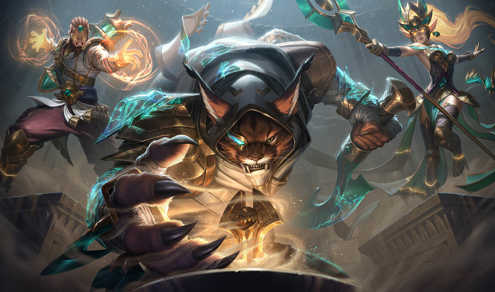
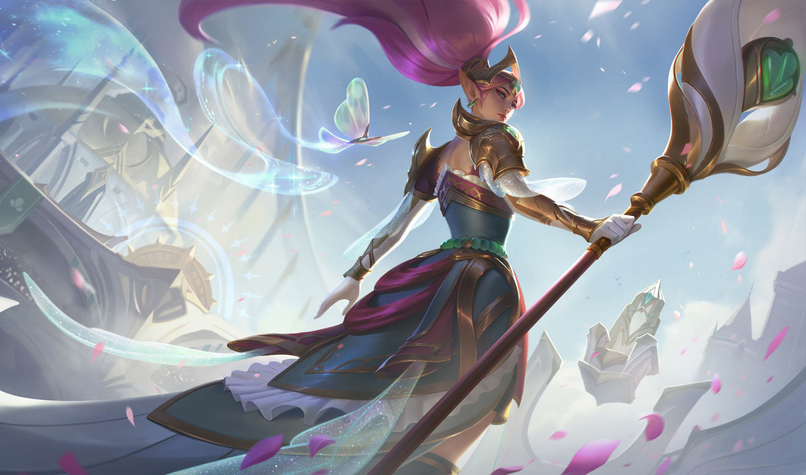
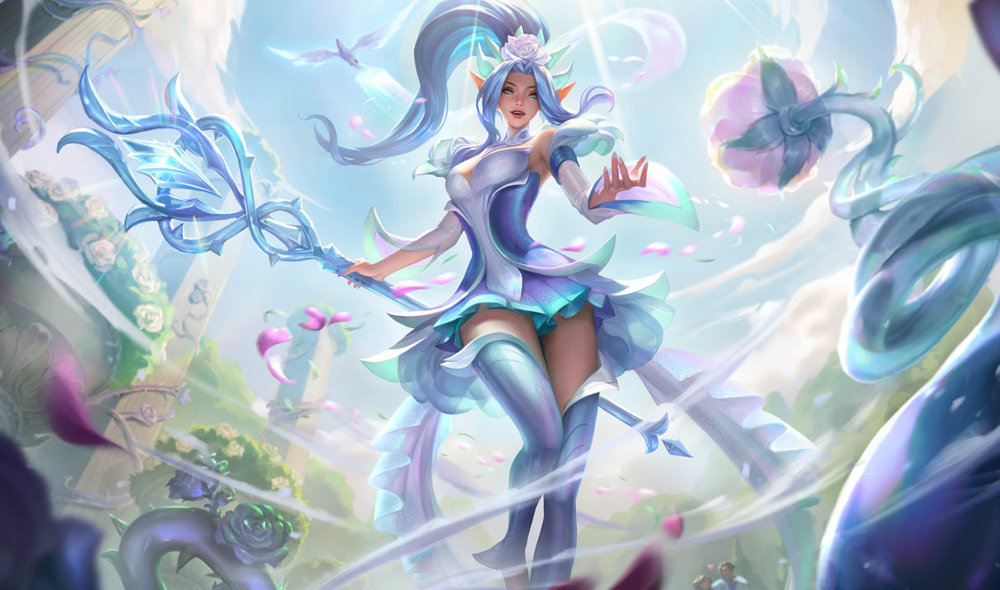
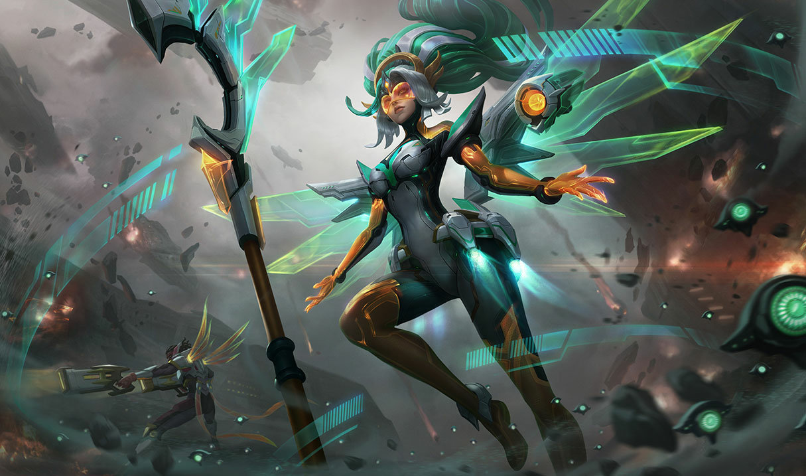
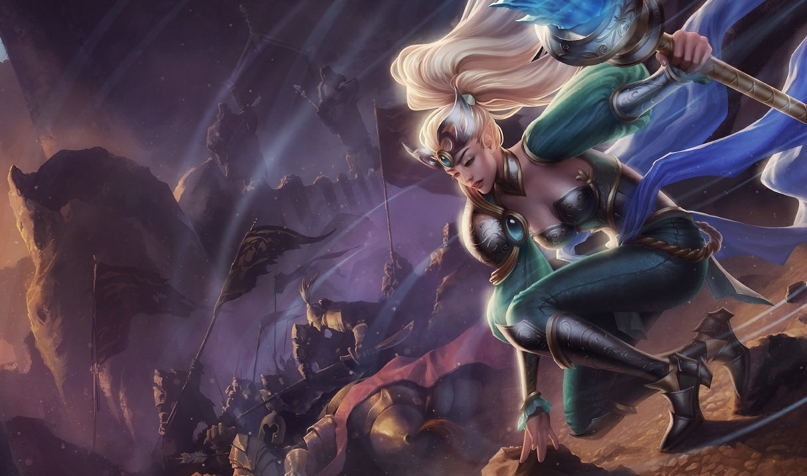

Cumplelolero · la última de los cuatro
JANNA17 AÑOS
La Furia de la Tormenta
Support · Zaun
Que te toque una en el equipo
O el viento va
a tu favor

↑
Si te toca uno bueno
La partida se siente distinta
↓
Si te toca uno malo
Mejor ni jugaste
El one trick #1 del mundo
JANNA
#ラフレシア
Europa Oeste · nivel de invocador 1 748 · sus cuatro más jugadas son support
Mejor Janna del mundo
insignia oficial · 8× más que su 2ª(Nami · 1 422 731)
—
Solo / Dúo
Sin clasificar
—
Flexible
Sin clasificar
Después de tres videos burlándome del elo de los otepés, viene este y ni rango tiene que enseñar. No es que sea malo: le vale competir. Nomás quiere jugar Janna.
Los cuatro del 2 de septiembre
Cuatro formas distintas
de estar enfermo
Blitzcrank
rokinas
8,40 M
Malphite
BCBG
11,20 M
Dr. Mundo
EVANPORADA
17,96 M
Janna
Janna #ラフレシア
11,38 M
Mismo cumpleaños, mismos diecisiete años… y cada uno enfermo a su manera.
Las skins
16 skins, pero solo
8 a la venta

Reina de Hielo 975 RP
Reportera del Clima
1820 RP

Guardiana Estelar 1350 RP
Espada Sagrada 1350 RP
Guardiana de las Arenas 1350 RP
Reina Guerrera 1350 RP
Rosa de Cristal 1350 RP
Halo Cibernético 1350 RP~84 USD
las ocho · 10 895 RP · ~1 635 MXN
Y aquí está lo chistoso

Hay una skin
que no se compra
La Janna Victoriosa no está en la tienda: se gana subiendo de rango en una temporada de ranked.
O sea que la única skin de Janna que el mejor Janna del mundo seguramente nunca va a tener es justamente la que se gana jugando en serio.
El lore
Janna no es una maga.
Es una diosa.
Y no una diosa cualquiera: tiene por lo menos seis mil años. En el lore es la más vieja de los cuatro por muchísimo.
Cómo empezó
Una historia
de marineros
1
Veían un pájaro azul brillante justo antes de que llegara el viento fuerte
2
Oían un silbido en el aire antes de la tormenta, como si algo los advirtiera
3
Sus creyentes más fieles estaban en lo que hoy es Zaun: necesitaban el mar tranquilo para su puerto
4
Le hacían estatuas y usaban amuletos con forma de pájaro azul
JAN’AHREM
«Guardiana» en shurimano antiguo, porque siempre aparecía cuando más la necesitaban. Con el tiempo se acortó a Janna.
Y luego la olvidaron
Dejaron de rezarle…
y ella fue igual
1
Zaun se clavó con las máquinas y simplemente la olvidó
2
Un día distritos enteros se hundieron bajo el nivel del mar
3
Miles de personas quedaron peleando contra la corriente del río
4
En la desesperación le volvieron a rezar. Y ella fue.
Frenó el agua para que pudieran salir y disipó el humo de los incendios para que pudieran ver y respirar mientras corrían. Murieron muchos, pero los que sobrevivieron volvieron a creer.
El detalle de diseño
Su poder depende de
cuánta gente crea en ella
Está literal en el lore: a Janna la moldea la fe de sus seguidores. Mientras más gente crea, más fuerte es.
Riot hizo a la
support perfecta
support perfecta
Un personaje cuya fuerza entera depende de que los demás la volteen a ver.
Y con esa
Cerramos los cuatro
cumpleañeros
GIGI EASY
Tírenme un follow o les voy a meter la cuarta. Chao.